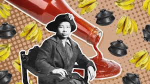

María Orosa y Ylagan
Filipino food technologist, pharmaceutical chemist, humanitarian, and war heroine.

"Food is an indespensable factor to the health and strength of a people in time of war or in time of peace.
It deserves a most important consideration in the planning of our national defense."
- María Orosa y Ylagan
Here's a timeline of her life:
- 1892 - Born in Taal, Batangas
- 1921 - Earned an undergraduate and master's degrees in Chemistry and Pharmaceutical Science.
- 1922 - Returned to the Philippines to focus on addressing the problem of malnutrition in her homeland. She got jobs with the Food Preservation Division of the Philippine Bureau of Science and at the Centro Escolar University.
- 1925 - She displayed a range of canned and preserved local foods, including a whole canned mango. Among her almost 700 innovations and recipes are Soyalac (a drink made from soya beans); flour made from cassava, green bananas, and coconuts; darak (a rice flour high in Vitamin B-1); a recipe for fish balls that tasted like corned beef; and banana ketchup.
- 1926 - Traveled through China, Japan, and Hawaii visiting over 50 canneries. When she returned, she was made chief of the Food Preservation Division and then of the Home Economics Division.
- 1934 - Was head of the Plant Utilization Division of the Philippine Government's Bureau of Plant Industry.
- 1941 - When the Japanese attack began on the Philippines just a few short hours after Pearl Harbor, Maria's family evacuated to their homes in Batangas Province. Despite their pleas, Maria stayed in Manila to feed those who could not leave. “My place is here,” she said, “I cannot in conscience abandon my work and my girls.” The last time Maria's niece Helen saw her, Maria gave her a pack of cigarettes and told her to be hopeful. On the package were the words “I shall return,” the promise of General Douglas MacArthur to the Philippine people when American forces withdrew under the Japanese onslaught.
- 1942 - She followed in her father's footsteps, and became part of the resistance. In her lab, she and 400 of her students prepared nutrient-dense rations. This kept these women working and fed while they were trapped in Manila by the war. Maria and her team also provided others with food - including smuggling it to prisoners in the Santo Tomas Internment Camp. Located on the campus of the University of Santo Tomas in Manila, the camp held over 4,000 prisoners, most of whom were American. Her decades of work to create local foods instead of reliance on imports went a long way to helping Filipinos survive the war.
- 1945 - Battle of Manila began, with MacArthur and the American forces fighting to retake the city from the Japanese. Maria Orosa was working in her lab (as usual) when a round of artillery shelling began. On the way to a bomb shelter with her staff, Maria was hit by shrapnel. Despite the danger from the ongoing attack, one of Maria's colleagues found a pushcart and took Maria to Remedios Hospital. The hospital was originally organized by the Philippine Red Cross in the Malate Catholic School, but it quickly ran out of funds and was being run by volunteers. Shortly after her arrival, on February 13, 1945, she and over 400 others were killed when an American bomb landed on the hospital. Burial for Maria and the others had to wait, as the Japanese were shooting anyone in the streets. She and the others were buried in a mass grave several days later.
- 2020 - Archaeologists from the University of the Philippines were excavating a tomb behind what had been Remedios Hospital. Built in the 1950s, it contained the remains of 12 volunteers who kept Remedios Hospital running and who were killed when the hospital was bombed. During the excavations, archaeologists were surprised to find a stone engraved, “MARIA Y. OROSA / NOV. 29 1892 - FEB. 13 1945 / DIED IN LINE OF DUTY.” Excavation showed that the stone is a memorial and does not mark Maria's final resting place. Archaeologists think they know which mass grave her remains may be in, but the mystery remains unsolved.
"She nourished a nation through chemistry and culinary ingenuity, developing food products and preservation methods that highlighted the island's abundant resources and paved a path toward self-sustainability."
-Jessica Gingrich